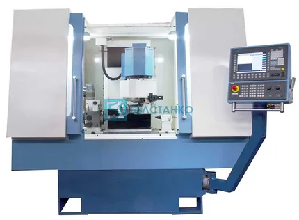
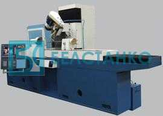
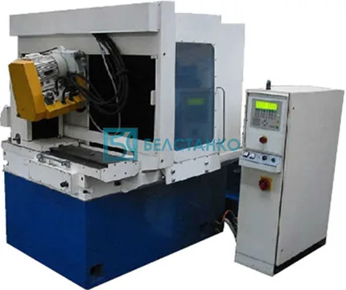
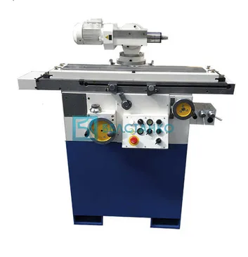
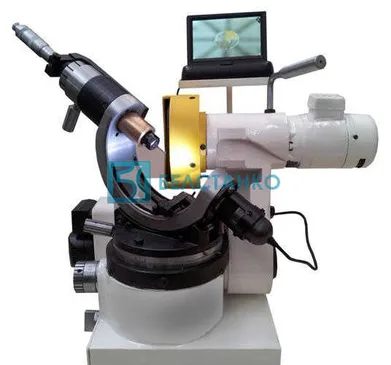

ВЗ-531Ф4
Полуавтомат шлифовально-заточной центр с ЧПУ
Цена по запросу
Полуавтомат шлифовально-заточной центр с ЧПУ
Цена по запросу
Полуавтомат заточной с ЧПУ для червячных фрез
Цена по запросу
Полуавтомат заточной с ЧПУ для протяжек
Цена по запросуПолуавтомат заточный с ЧПУ для червячных фрез
Цена по запросу

Полуавтомат заточный с ЧПУ для червячных фрез
Цена по запросу
Полуавтомат заточный с ЧПУ для червячных фрез
Цена по запросу

Станок заточный универсальный
3 168 000 ₽

Станок заточный
3 720 000 ₽


Станок для заточки сверл
478 800 ₽